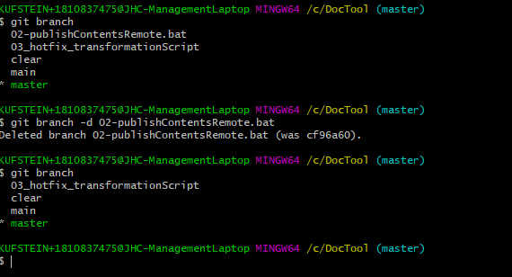

git branch delete - Löschen eines lokalen Branches
Löschen lokaler Branch
Vor allem wenn viele Teammitglieder an einem Projekt arbeiten entstehen viele Branches. Dabei kann es schnell unübersichtlich werden. Nicht mehr benötigte Branches können lokal wiefolgt gelöscht werden:
git branch -d "Branchname"
Löschen Remote Branch
git push origin --delete feature-101
